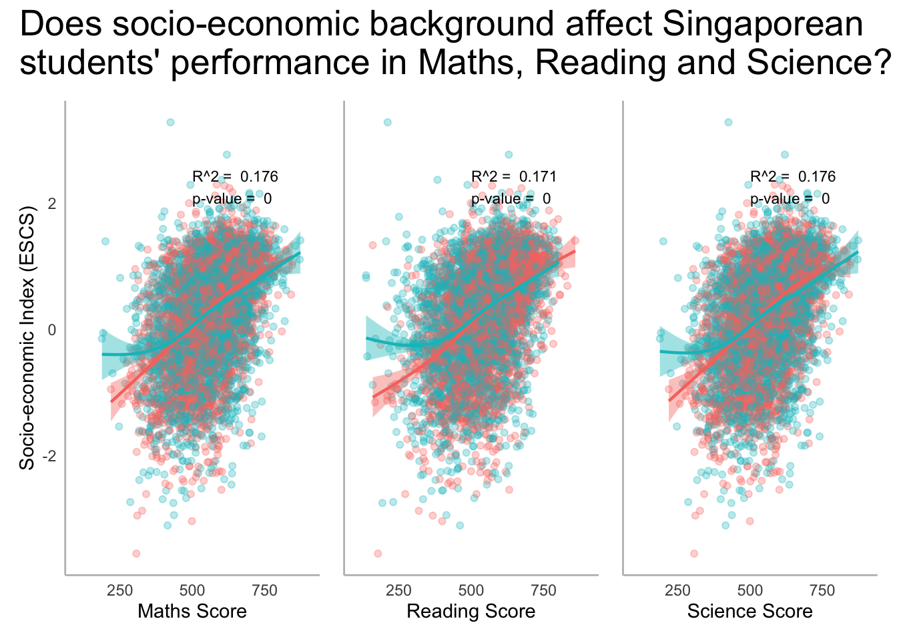
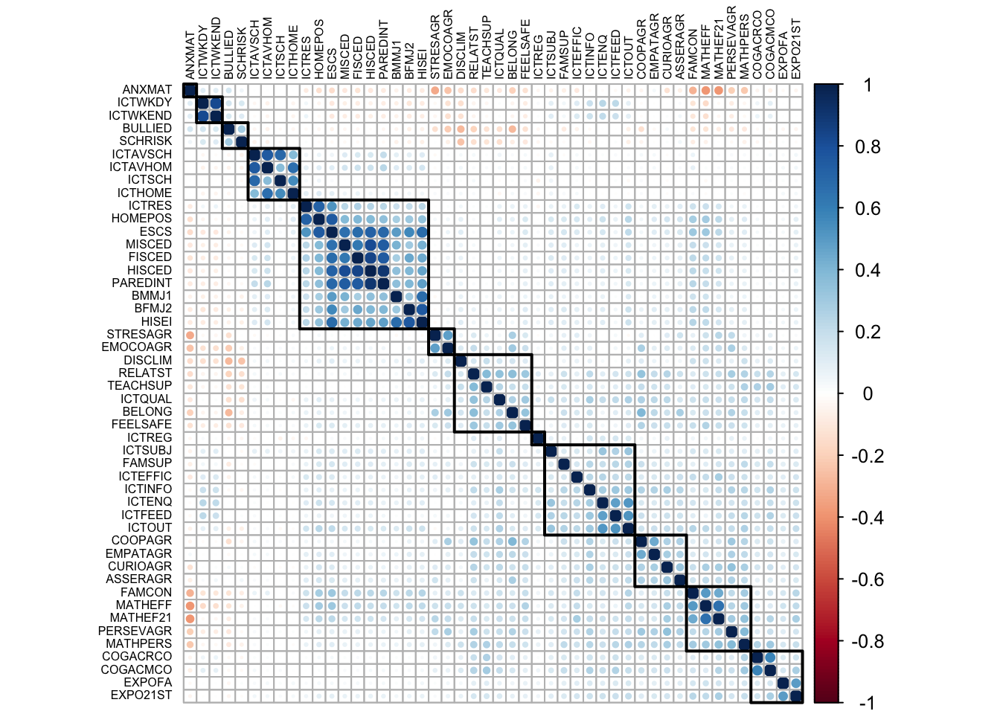
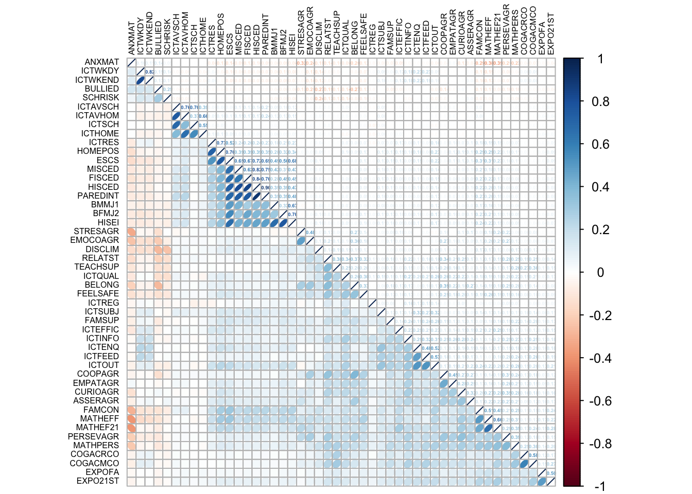

pacman::p_load(ggiraph, ggrepel, ggridges, ggdist, kableExtra, patchwork, ggthemes, hrbrthemes, haven, tidyverse) OECD PISA Global Education

1. Learning Objectives
The Organisation for Economic Co-operation and Development (OECD) Programme for International Student Assessment (PISA) is a global education survey conducted to examines what students know in mathematics, reading and science, how well students can solve complex problems, think critically and communicate effectively. This gives insights into how well education systems are preparing students for real life challenges and future success. It provides the most comprehensive and rigorous international assessment of student learning outcomes to date. Results from PISA indicate the quality and equity of learning outcomes attained around the world, and allow educators and policy makers to learn from the policies and practices applied in other countries.
OECD education director, Andreas Schleicher, shared in a BBC article that “Singapore managed to achieve excellence without wide differences between children from wealthy and disadvantaged families.”. Furthermore, the slogan “Every School a Good School” was popularised by Mr Heng Swee Keat when he was education minister from 2011 to 2015.
The general public, however, strongly belief that there are still disparities that exist, especially between the elite schools and neighborhood school, between students from families with higher socioeconomic status and those with relatively lower socioeconomic status and immigration and non-immigration families.
PISA is conducted every three years to assess the education systems worldwide through testing 15 year-old students in the subjects of mathematics, reading, and science. Singapore participated for the first time in PISA in 2009. PISA reports the following:
Describes students’ performance in mathematics, reading and science;
Examines gender differences in performance;
Investigates how performance relates to students’ socio-economic status and immigrant background;
Describes how the quality and equity of learning outcomes have evolved since previous PISA assessments.
By comparing results internationally, policy makers and educators in Singapore can learn from other countries’ policies and practices.
Why are 15-year-old students choosen for assessment?
PISA measures student performance as the extent to which 15-year-old students near the end of their compulsory education have acquired the knowledge and skills that are essential for full participation in modern societies, particularly in the core domains of reading, mathematics, and science.
The PISA 2022 database contains the full set of responses from individual students, school principals and parents. There are a total of five data files and their contents are as follows:
Student questionnaire data file (focus of this task)
School questionnaire data file
Teacher questionnaire data file
Cognitive item data file
Questionnaire timing data file
These data files are in SAS and SPSS formats; SAS files will be used in this task.
Using appropriate Exploratory Data Analysis (EDA) methods and ggplot2 functions, we will reveal the following:
The distribution of Singapore students’ performance in mathematics, reading, and science, and
The relationship between these performances with schools, gender and socioeconomic status of the students.
2. Load Packages
The following R packages will be used:
ggiraphcreates dynamic ggplot graphs.ggrepelprovides geoms to repel overlapping text labelsggthemesprovides themes, geoms, and scaleshrbrthemesprovides typography-centric themes and theme componentspatchworkprepares composite figureshavenreads and writes various data formats used by other statistical packagestidyversesupports data science, analysis and communication taskkableExtrabuilds common complex tables and manipulate table styles
3. Import Data
The PISA 2022 database was released on December 5, 2022. For the purpose of this practice, the Student questionnaire data file will be used to fulfil the task.
Source: PISA 2022 (data) and PISA 2022 Results Volume 1 (guide)
stu_qqq <- read_sas("data/STU_QQQ_SAS/cy08msp_stu_qqq.sas7bdat")The output shows 613,744 observations with 1,279 variables. Being a global survey, the stu_qqq dataset contains several nominal data columns to label and categorize the students; namely country code CNT, country identifier CNTRYID, school ID CNTSCHID and student ID CNTSTUID. The other variables examine numerous aspects of well-being, education system, family background and pandemic-related impact on education.
For relevance, we filter stu_qqq by the column country code (CNT) for SGP to obtain the survery results from Singapore students.
stu_qqq_SGP <- stu_qqq %>%
filter(CNT == "SGP")The output shows 6,606 observations with 1,279 variables where Singapore accounts for close to 1% of the observations. The number of observations is likely to reflect the number of students who undergo the assessment. Based on the duplication check using student ID CNTSTUID, there are zero observations which indicates unique student ID with no duplication. To enable efficient loading of dataset, there will be save and load points to prevent import of large datasets.
Save Point
write_rds(stu_qqq_SGP, "data/stu_qqq_SGP.rds")
Load Point
stu_qqq_SGP <-read_rds("data/stu_qqq_SGP.rds")Show the code
duplicate <- stu_qqq_SGP %>%
group_by(CNTSTUID) %>%
filter(n() > 1)4. Explore Data
As of 2022, Singapore has 148 public secondary schools under MOE and 24 international schools. From the data table, PISA 2022 database compiles the student assessment across 164 unique school ID, surveying an impressive 95% of local schools. In addition, Singapore is allocated a country ID CNTRYID 702 and the school ID CNTSCHID ranges from 70200001 to 70200165.
Show the code
SCH_table <- stu_qqq_SGP %>%
group_by(CNT, CNTRYID, CNTSCHID) %>%
summarise(TOTAL_STUDENT = n())
DT::datatable(SCH_table)
Observation
Given that the index runs from 1 to 164 and the school ID CNTSCHID ranges from 70200001 to 70200165, there is no school allocated to ‘70200150’.
There is an average of* 40.28 students assessed per school, equivalent to the class size of a level, in Singapore context, Secondary 3.
Show the code
summary(SCH_table$TOTAL_STUDENT) Min. 1st Qu. Median Mean 3rd Qu. Max.
5.00 36.00 37.00 40.28 40.00 60.00 The data structure can be obtained using str(), glimpse() or head(). Due to the large number of variables and display purposes, we will display up to 20 variables.
Show the code
head(stu_qqq_SGP, n = 30)# A tibble: 30 × 1,279
CNT CNTRYID CNTSCHID CNTSTUID CYC NatCen STRATUM SUBNATIO REGION OECD
<chr> <dbl> <dbl> <dbl> <chr> <chr> <chr> <chr> <dbl> <dbl>
1 SGP 702 70200052 70200001 08MS 070200 SGP01 7020000 70200 0
2 SGP 702 70200134 70200002 08MS 070200 SGP01 7020000 70200 0
3 SGP 702 70200112 70200003 08MS 070200 SGP01 7020000 70200 0
4 SGP 702 70200004 70200004 08MS 070200 SGP01 7020000 70200 0
5 SGP 702 70200152 70200005 08MS 070200 SGP01 7020000 70200 0
6 SGP 702 70200043 70200006 08MS 070200 SGP01 7020000 70200 0
7 SGP 702 70200049 70200007 08MS 070200 SGP01 7020000 70200 0
8 SGP 702 70200107 70200008 08MS 070200 SGP01 7020000 70200 0
9 SGP 702 70200012 70200009 08MS 070200 SGP01 7020000 70200 0
10 SGP 702 70200061 70200010 08MS 070200 SGP01 7020000 70200 0
# ℹ 20 more rows
# ℹ 1,269 more variables: ADMINMODE <dbl>, LANGTEST_QQQ <dbl>,
# LANGTEST_COG <dbl>, LANGTEST_PAQ <dbl>, Option_CT <dbl>, Option_FL <dbl>,
# Option_ICTQ <dbl>, Option_WBQ <dbl>, Option_PQ <dbl>, Option_TQ <dbl>,
# Option_UH <dbl>, BOOKID <dbl>, ST001D01T <dbl>, ST003D02T <dbl>,
# ST003D03T <dbl>, ST004D01T <dbl>, ST250Q01JA <dbl>, ST250Q02JA <dbl>,
# ST250Q03JA <dbl>, ST250Q04JA <dbl>, ST250Q05JA <dbl>, ST250D06JA <chr>, …There is an observable number of NA values in the tibble table. Appropriate imputation will be performed according to the context of the variables and analysis requirements.
Show the code
sum(is.na(stu_qqq_SGP))[1] 4168500Casting to character:
CNTRYID, CNTSCHID and CNTSTUID are unique ID and casted from dbl to chr.
Show the code
stu_qqq_SGP <- stu_qqq_SGP %>%
mutate(CNTRYID = as.character(stu_qqq_SGP$CNTRYID),
CNTSCHID = as.character(stu_qqq_SGP$CNTSCHID),
CNTSTUID = as.character(stu_qqq_SGP$CNTSTUID))Casting to factor:
Show the code
stu_qqq_SGP <- stu_qqq_SGP %>%
mutate(ST004D01T = as.factor(stu_qqq_SGP$ST004D01T),
ST294Q02JA = as.factor(stu_qqq_SGP$ST294Q02JA),
ST272Q01JA = as.factor(stu_qqq_SGP$ST272Q01JA),
ST019AQ01T = as.factor(stu_qqq_SGP$ST019AQ01T),
ST253Q01JA = as.factor(stu_qqq_SGP$ST019AQ01T))Data Scheme
With 1,279 variables, we can find out
Code
flowchart LR
A[Country Code] --> B[School ID]
B --> C[Student ID]
C --> D{Student \n Performance}
D --> E[Maths]
E --> H[Anxiety \n Cognitive Activation \n Exposure \n Self-efficacy \n Teacher Support]
D --> F[Reading]
D --> G[Science]
F --> H
G --> H
C --> I{Education \n System}
I --> J[School Characteristics: \n Grades \n Classroom \n Teacher]
I --> K[Student Characteristics: \n Attitude \n Background \n Behaviour]
C --> L{Economic \n Social \n Cultural \n Status}
L --> M[Parents Highest Level of Education\n Parents highest occupational status \n Home Possessions]
C --> N{Well-being}
N --> O[Sense of Belonging \n School Safety \n Perseverance \n Curiosity \n Cooperation \n Stress Resistance \n Emotional Control]flowchart LR
A[Country Code] --> B[School ID]
B --> C[Student ID]
C --> D{Student \n Performance}
D --> E[Maths]
E --> H[Anxiety \n Cognitive Activation \n Exposure \n Self-efficacy \n Teacher Support]
D --> F[Reading]
D --> G[Science]
F --> H
G --> H
C --> I{Education \n System}
I --> J[School Characteristics: \n Grades \n Classroom \n Teacher]
I --> K[Student Characteristics: \n Attitude \n Background \n Behaviour]
C --> L{Economic \n Social \n Cultural \n Status}
L --> M[Parents Highest Level of Education\n Parents highest occupational status \n Home Possessions]
C --> N{Well-being}
N --> O[Sense of Belonging \n School Safety \n Perseverance \n Curiosity \n Cooperation \n Stress Resistance \n Emotional Control]
5. Visualize Data
5.1 What is the demographics and environment of the students?
To understand the student demographics, we will visualize the distribution and summary statistics of gender, age and nationality. We will also have an overview of the students’ time invested in studying and exposure to digital device, and their parent’s education level.
| Variable | Description |
|---|---|
| ST004D01T | Student (Standardized) Gender |
| AGE | Students’ age |
| ST019AQ01T | Country of birth |
| ST294Q02JA | Number of days spent studying for school or homework |
| ST253Q01JA | Number of digital devices in your home |
| HISCED | Highest level of education of parents (ISCED) |
Show the code
plot1 <- ggplot(stu_qqq_SGP, aes(x = ST004D01T))+
geom_bar(colour = "black",
fill = "aquamarine")+
labs(title = "Students' Gender", x = NULL, y = NULL)+
ylim(0,4000)+
geom_text(stat = "Count",
aes(label = after_stat(count)),
vjust = -1)+
theme_minimal()
plot2 <- ggplot(stu_qqq_SGP, aes(y = AGE))+
geom_boxplot(notch = TRUE,
fill = "aquamarine3")+
labs(title = "Students' Age", x = NULL, y = NULL)+
theme_minimal()
plot3 <- ggplot(stu_qqq_SGP, aes(x = ST019AQ01T))+
geom_bar(colour = "black",
fill = "aquamarine4",
na.rm = TRUE)+
labs(title = "Students' Nationality", x = NULL, y = NULL)+
ylim(0,6000)+
geom_text(stat = "Count",
aes(label = after_stat(count)),
vjust = -1)+
theme_minimal()
plot4 <- ggplot(stu_qqq_SGP, aes(x = ST294Q02JA))+
geom_bar(colour = "black",
fill = "aquamarine4",
na.rm = TRUE)+
labs(title = "Students' Study (Days)", x = NULL, y = NULL)+
ylim(0,3500)+
geom_text(stat = "Count",
aes(label = after_stat(count)),
vjust = -1,
size = 3)+
theme_minimal()
plot5 <- ggplot(stu_qqq_SGP, aes(x = ST253Q01JA))+
geom_bar(colour = "black",
fill = "aquamarine",
na.rm = TRUE)+
labs(title = "Students' Digital Expose", x = NULL, y = NULL)+
ylim(0,6000)+
geom_text(stat = "Count",
aes(label = after_stat(count)),
vjust = -1)+
theme_minimal()
plot6 <- ggplot(stu_qqq_SGP, aes(x = HISCED))+
geom_bar(colour = "black",
fill = "aquamarine3")+
labs(title = "Parents' Education", x = NULL, y = NULL)+
ylim(0,2000)+
geom_text(stat = "Count",
aes(label = after_stat(count)),
vjust = -1,
size = 3)+
theme_minimal()
(plot1 + plot2 + plot3) / (plot4 + plot5 + plot6)
Observations
Gender: The distribution between male and female is relatively even.
Age: The median age is 15.75.
Nationality: Assuming value 1 is Singapore, majority of the students are local.
Study Time: Most students spend 1 or 6 days studying or doing homework. (In comparison, Masters students spend 7 days studying.)
Digital Exposure: Manjority of the students are exposed to one device, relatively low considering TV as a baseline screen in most homes and most students having their personal mobile devices.
Parents’ Education: Short-cycle tertiary education is not applicable in Singapore. Most parents (70%) hold tertiary and above education.
ISCED Level Education Level Level 1 Primary Level 2 Lower secondary Level 3 Upper secondary Level 4 Post-secondary non-tertiary Level 5 Short-cycle tertiary Level 6 Bachelor’s or equivalent Level 7 Master’s or equivalent Level 8 Doctoral or equivalent
5.1 How did Singaporean students perform in Maths, Reading and Science?
stu_qqq_SGP_perf <- stu_qqq_SGP %>%
group_by(CNT, CNTRYID, CNTSCHID, CNTSTUID, ST004D01T, ESCS) %>%
summarise(MATH = round(mean(PV1MATH, PV2MATH, PV3MATH, PV4MATH, PV5MATH,
PV6MATH, PV7MATH, PV8MATH, PV9MATH, PV10MATH), 1),
READING = round(mean(PV1READ, PV2READ, PV3READ, PV4READ, PV5READ,
PV6READ, PV7READ, PV8READ, PV9READ, PV10READ), 1),
SCIENCE = round(mean(PV1SCIE, PV2SCIE, PV3SCIE, PV4SCIE, PV5SCIE,
PV6SCIE, PV7SCIE, PV8SCIE, PV9SCIE, PV10SCIE), 1))glimpse(stu_qqq_SGP_perf)Rows: 6,606
Columns: 9
Groups: CNT, CNTRYID, CNTSCHID, CNTSTUID, ST004D01T [6,606]
$ CNT <chr> "SGP", "SGP", "SGP", "SGP", "SGP", "SGP", "SGP", "SGP", "SGP…
$ CNTRYID <chr> "702", "702", "702", "702", "702", "702", "702", "702", "702…
$ CNTSCHID <chr> "70200001", "70200001", "70200001", "70200001", "70200001", …
$ CNTSTUID <chr> "70200085", "70200211", "70200271", "70200307", "70200327", …
$ ST004D01T <fct> 2, 2, 2, 2, 2, 2, 2, 2, 2, 2, 2, 2, 2, 2, 2, 2, 2, 2, 2, 2, …
$ ESCS <dbl> 1.2485, 0.6114, 0.8463, 1.3575, 1.4269, -0.1876, 1.1207, 2.0…
$ MATH <dbl> 779.4, 666.4, 822.6, 755.6, 669.4, 640.7, 751.8, 780.5, 840.…
$ READING <dbl> 641.2, 663.4, 699.9, 693.0, 590.4, 593.8, 655.1, 703.2, 766.…
$ SCIENCE <dbl> 795.3, 671.9, 781.1, 750.4, 639.2, 596.6, 711.3, 702.6, 824.…Show the code
stu_qqq_SGP_perf$MATH <- as.integer(stu_qqq_SGP_perf$MATH)
stu_qqq_SGP_perf$MATH <- as.integer(stu_qqq_SGP_perf$READING)
stu_qqq_SGP_perf$MATH <- as.integer(stu_qqq_SGP_perf$SCIENCE)Show the code
plot7 <- ggplot(stu_qqq_SGP_perf,
aes(x = MATH, y = ST004D01T,
fill = ST004D01T, colour = ST004D01T))+
geom_density_ridges(bandwidth = 7, alpha = 0.6)+
geom_vline(aes(xintercept = 472),
colour = "azure4",
linetype = "dashed") +
annotate(geom = "text", x = 500, y = 3,
label = "OECD Mean Maths Score = 472",
vjust = -0.5,
hjust = 1.2,
size = 3.5) +
geom_vline(aes(xintercept = 575),
colour = "azure4",
linetype = "dashed") +
annotate(geom = "text", x = 1000, y = 3,
label = "SGP Mean Maths Score = 575",
vjust = -0.5,
hjust = 1.2,
size = 3.5) +
geom_boxplot(colour = "black",
width = .20,
outlier.shape = NA,
alpha = 0.4)+
xlim(0,1000)+
labs(title = "Mathematics", x = NULL, y = NULL)+
theme_minimal()+
theme(legend.position = "none",
axis.text.x = element_blank())
plot8 <- ggplot(stu_qqq_SGP_perf,
aes(x = READING, y = ST004D01T,
fill = ST004D01T, colour = ST004D01T))+
geom_density_ridges(bandwidth = 7, alpha = 0.6)+
geom_vline(aes(xintercept = 476),
colour = "azure4",
linetype = "dashed") +
annotate(geom = "text", x = 500, y = 3,
label = "OECD Mean Reading Score = 476",
vjust = -0.5,
hjust = 1.2,
size = 3.5) +
geom_vline(aes(xintercept = 543),
colour = "azure4",
linetype = "dashed") +
annotate(geom = "text", x = 1000, y = 3,
label = "SGP Mean Reading Score = 543",
vjust = -0.5,
hjust = 1.2,
size = 3.5) +
geom_boxplot(colour = "black",
width = .20,
outlier.shape = NA,
alpha = 0.4)+
xlim(0,1000)+
labs(title = "Reading", x = NULL, y = NULL)+
theme_minimal()+
theme(legend.position = "none",
axis.text.x = element_blank())
plot9 <- ggplot(stu_qqq_SGP_perf,
aes(x = SCIENCE, y = ST004D01T,
fill = ST004D01T, colour = ST004D01T))+
geom_density_ridges(bandwidth = 7, alpha = 0.6)+
geom_vline(aes(xintercept = 485),
colour = "azure4",
linetype = "dashed") +
annotate(geom = "text", x = 500, y = 3,
label = "OECD Mean Science Score = 485",
vjust = -0.5,
hjust = 1.2,
size = 3.5) +
geom_vline(aes(xintercept = 561),
colour = "azure4",
linetype = "dashed") +
annotate(geom = "text", x = 1000, y = 3,
label = "SGP Mean Maths Score = 561",
vjust = -0.5,
hjust = 1.2,
size = 3.5) +
geom_boxplot(colour = "black",
width = .20,
outlier.shape = NA,
alpha = 0.4)+
xlim(0,1000)+
labs(title = "Science", x = NULL, y = NULL)+
theme_minimal()+
theme(legend.position = "none")
plot7 / plot8 / plot9
5.2 Does the school system affect Singaporean students’ performance in Maths, Reading and Science?
5.2 Does socio-economic background affect Singaporean students’ performance in Maths, Reading and Science?
PISA index of economic, social, and cultural status ESCS is a composite score that combines into a single score information from three components: parents’ highest level of education (PARED index1); parents’ highest occupational status (HISEI index1); and home possessions (HOMEPOS index1, which is a proxy for family wealth).
plot10 <- ggplot(data = stu_qqq_SGP_perf,
aes(y = ESCS, x = MATH,
fill = ST004D01T, colour = ST004D01T))+
geom_point(alpha = 0.3)+
geom_smooth(size = 0.8)+
labs(title = "ESCS and MATH", x = "Maths", y = "Socio-economic Index (ESCS)")+
theme_minimal()+
xlim(100,900)+
theme(legend.position = "none",
panel.grid.major = element_blank(),
panel.grid.minor = element_blank(),
axis.line = element_line(colour = "grey"))
plot11 <- ggplot(data = stu_qqq_SGP_perf,
aes(y = ESCS, x = READING,
fill = ST004D01T, colour = ST004D01T))+
geom_point(alpha = 0.3)+
geom_smooth(size = 0.8)+
labs(title = "ESCS and READING", x = "Reading", y = NULL)+
theme_minimal()+
xlim(100,900)+
theme(legend.position = "none",
panel.grid.major = element_blank(),
panel.grid.minor = element_blank(),
axis.line = element_line(colour = "grey"))+
theme(axis.text.y = element_blank())
plot12 <- ggplot(data = stu_qqq_SGP_perf,
aes(y = ESCS, x = SCIENCE,
fill = ST004D01T, colour = ST004D01T))+
geom_point(alpha = 0.3)+
geom_smooth(size = 0.8)+
labs(title = "ESCS and SCIENCE", x = "Science", y = NULL)+
theme_minimal()+
xlim(100,900)+
theme(legend.position = "none",
panel.grid.major = element_blank(),
panel.grid.minor = element_blank(),
axis.line = element_line(colour = "grey"))+
theme(axis.text.y = element_blank())
plot10 + plot11 + plot12
5.2 Does correlation exist between the weighted likelihood estimates (WLEs)?
Show the code
stu_qqq_SGP_impute <- stu_qqq_SGP %>%
mutate_all(funs(ifelse(is.na(.), 0, .)))
stu_qqq_SGP_impute$FAMSUP <- as.double(stu_qqq_SGP_impute$FAMSUP)
stu_qqq_SGP_impute$DISCLIM <- as.double(stu_qqq_SGP_impute$DISCLIM)
stu_qqq_SGP_impute$TEACHSUP<- as.double(stu_qqq_SGP_impute$TEACHSUP)
stu_qqq_SGP_impute$COGACRCO<- as.double(stu_qqq_SGP_impute$COGACRCO)
COGACRCOError in eval(expr, envir, enclos): object 'COGACRCO' not foundlibrary(corrplot)
emotional_wellbeing = c(990:1001, 1005:1006)
# stu_qqq_SGP_impute[, selected_columns] <- lapply(stu_qqq_SGP_impute[, selected_columns], as.numeric)
vars.cor = cor(stu_qqq_SGP_impute[, emotional_wellbeing],
use = "complete.obs")
corrplot.mixed(vars.cor,
lower = "ellipse",
upper = "number",
number.cex = 0.6,
tl.pos = "lt",
diag = "l",
tl.col = "black")
library(corrplot)
school_support = c(1007:1015)
# stu_qqq_SGP_impute[, selected_columns] <- lapply(stu_qqq_SGP_impute[, selected_columns], as.numeric)
vars.cor = cor(stu_qqq_SGP_impute[, school_support],
use = "complete.obs")
corrplot.mixed(vars.cor,
lower = "ellipse",
upper = "number",
number.cex = 0.6,
tl.pos = "lt",
diag = "l",
tl.col = "black")
library(corrplot)
family_support = c(1004, 1030:1039)
# stu_qqq_SGP_impute[, selected_columns] <- lapply(stu_qqq_SGP_impute[, selected_columns], as.numeric)
vars.cor = cor(stu_qqq_SGP_impute[, family_support],
use = "complete.obs")
corrplot.mixed(vars.cor,
lower = "ellipse",
upper = "number",
number.cex = 0.6,
tl.pos = "lt",
diag = "l",
tl.col = "black")
library(corrplot)
digital_exposure = c(1050:1062, 1064)
# stu_qqq_SGP_impute[, selected_columns] <- lapply(stu_qqq_SGP_impute[, selected_columns], as.numeric)
vars.cor = cor(stu_qqq_SGP_impute[, digital_exposure],
use = "complete.obs")
corrplot.mixed(vars.cor,
lower = "ellipse",
upper = "number",
number.cex = 0.6,
tl.pos = "lt",
diag = "l",
tl.col = "black")
library(corrplot)
selected_columns = c(990:1001, 1005:1006,
1007:1015,
1004, 1030:1039,
1050:1062, 1064)
# stu_qqq_SGP_impute[, selected_columns] <- lapply(stu_qqq_SGP_impute[, selected_columns], as.numeric)
vars.cor = cor(stu_qqq_SGP_impute[, selected_columns],
use = "complete.obs")
corrplot.mixed(vars.cor,
lower = "ellipse",
upper = "number",
number.cex = 0.5,
tl.cex = 0.5,
tl.pos = "lt",
diag = "l",
tl.col = "black")